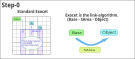
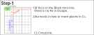
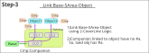
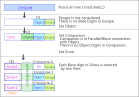
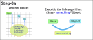
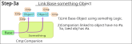

～～～ Attension ～～～
This page contains some unconfirmed ideas.
They will be confirmed or discarded depending on the experiments at GNPX (ver. 6+).
Exocet - 2 dissects how Exocet works and delves deeply into the meaning and role of each element.
Exocet - 2
(1) Basic form of Exocet
Exocet is an algorithm that uses a link that connects a Base and an Object. The logic of the link is SArea's 2CoverLine.
This example is a JE2, but the essence is the same as an SExocet or a 2-cell object.

Base has two cells placed on the miniline in the block. If focused on the candidate digit #a, #a is negated in Escape.
Also, in CrossLine-0 (outside the focus block and perpendicular to the miniline), there are multiple candidate numbers #a.

Candidate digit #a of Object is linked to CrossLine-0 in SArea. This is a strong bidirectional link.
CrossLine-0 -1 -2 are combined to form SArea. In Junior/Senior Exocet, each candidate digits(#ab) in SArea becomes a Base-Object link when it is covered by two lines. Companion plays an important role in forming this link.

Companion
Companion has an important role in Exocet.
That is, set Companion so that the Base-Object link is established.
Companion can also be set to "any", but if set too high it will filter out legitimate links.
- CrossLine has one instance of candidate digit #a.
- Divide CrossLine into SLine, Companion,Object,Escape.
- There is no #a in Escape. There are instances of #a in Companion, and Object.
- Adding the condition: Companion does not have #a makes SLine and Object links (they are in either one).
- If by some logic #a is not in SArea, #a is in Object.

(2) Exocet Form
In preparation for the expansion of Exocet, will be reshaping Exocet.

Exocet is an algorithm that uses the link between Base and Object.
There are various ways to link. The original Exocet link and SArea's 2-Coverline are some of them.
The companion feature also helps with link building.

... to be continued.
... SExocet Mutant in development.